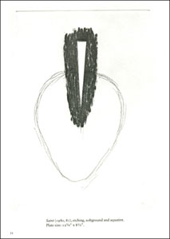
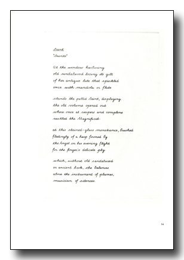

Seven Poems by Mallarmé, 1981 limited edition
with images by Christopher Wilmarth
with images by Christopher Wilmarth
Available for purchase from The Hudson Review.
The Seven Poems are printed in a signed and numbered edition of 30, of which 10 have been bound into books. Images, handwriting and book design are by Christopher Wilmarth.
The paper is 200 pound Crisbrook h.p. and was made in 1970 by the J.B. Green Company, England. The printing was done in New York by Mohammed Omer Khalil. The cases are by Four Hands Bindery. Published by Frederick Morgan and Christopher Wilmarth, New York, 1981. 17 1/4 x 13 inches.
|  | |
print magnification |
|